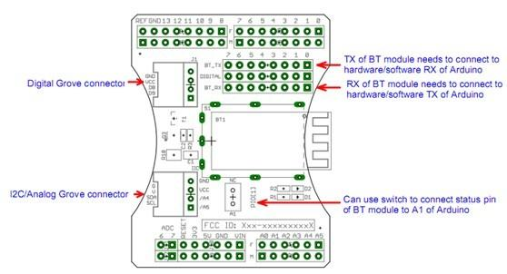
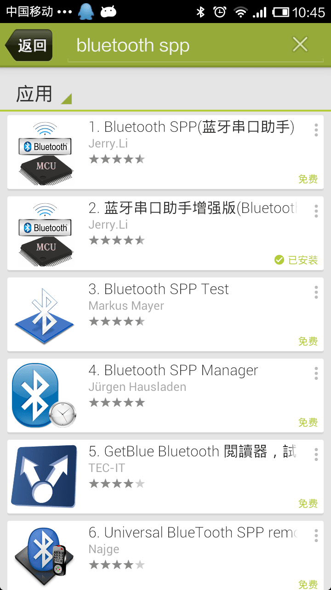
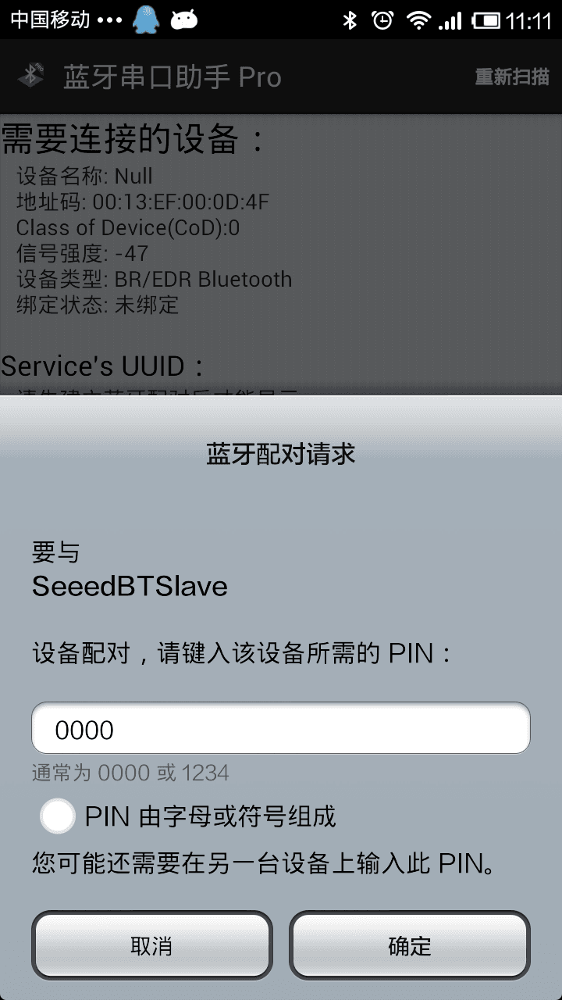

The Bluetooth Shield integrates a Serial Bluetooth module. It can be easily used with Arduino/Seeedstudio for transparent wireless serial communication. You can choose two pins from Arduino D0 to D7 as Software Serial Ports to communicate with Bluetooth Shield (D0 and D1 is Hardware Serial Port). The shield also has two Grove connectors (one is Digital, the other is Analog) for you to install Grove modules.
Model:SLD63030P

| Pad Type | Description |
|---|---|
| PIO1 | Status instruction port of Bluetooth module can be read by Arduino A1 port: low-disconnected, high-connected. |
| BT_RX | UART Data input of Bluetooth module. |
| BT_TX | UART Data output Bluetooth module. |
| Two Grove connectors | One is Digital (D8 and D9), the other is I2C/Analog (A4 and A5). |
This demo will show you how to connect two Bluetooth shield.
You need two piece of Seeeduino V3.0, a Grove - Button, and a Grove - LED.
One Bluetooth Shield as Master while the other as Slave, and there's a Botton connect to the Master, a Led connect to Slave.
When the button press up, the led in Slave will change.
Firstly, we choose a Bluetooth Shield as Master, and plug Grove - Button to D8,D9 of this Bluetooth Shield.
For the Slave, we connetc Grove - Led to it's D8,D9 Grove. And D7 as TX, D6 as RX, as folowing:

This demo will show you how to connect Bluetooth Shield to a Smart Phone.
We need a Seeeduino V3.0, a Grove - Temperature Sensor, and what's more, a Smart Phone that with Bluetooth function.
Via a Bluetooth SPP App, we send a 't' to Bluetooth Shield, then it'll return the temperature.
Plug Grove - Temperature Sensor to A4,A5 Grove of Bluetooth Shield.
TX connect to D7 while RX connect to D6. as folowing:

Here we us an Ardriod Phone, Mine is a Xiaomi 2A, open Google Play, search bluetooth spp, you can find many results.

Most of this app are useful, just choose one and have try.
After installing an SPP app, try connecting it to SeeedBTSlave, pin code is: "0000"

When connect is ok, send 't' to SeeedBTSlave, and you can get the temperature now:
It's a pity that we don't have any demo about Bluetooth Shield in the Recipe yet.
Post your awesome project about CAN BUS Shield to win $100 Coupon! Please feel free to contact us: recipe@seeed.cc
Here we introduce some projects about Serial port bluetooth module .
Serial port bluetooth, Drop-in replacement for wired serial connections, transparent usage. You can use it simply for a serial port replacement to establish connection between MCU and GPS, PC to your embedded project and etc.
This is a complete tutorial about how to control multiple servo motors from android app through Serial Port Bluetooth Module.
Born with the spirit of making and sharing, that is what we believe makes a maker.
And only because of this, the open source community can be as prosperous as it is today.
It does not matter what you are and what you have made, hacker, maker, artist or engineers.
As long as you start sharing your works with others, you are being part of the open source community and you are making your contributions.
Now share your awesome projects with us on Recipe, and win a chance to become the Core User of Seeed.
Get more information about Core User please email to: recipe@seeed.cc
Copyright (c) 2008-2016 Seeed Development Limited (www.seeedstudio.com / www.seeed.cc)